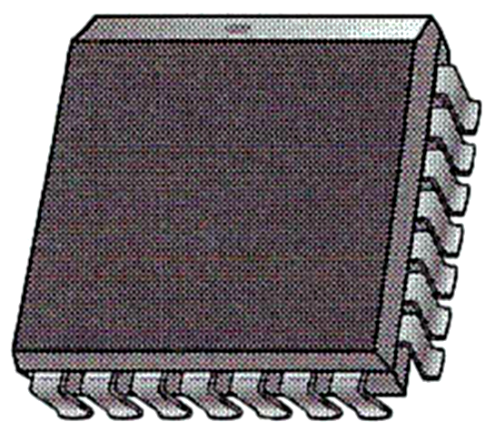
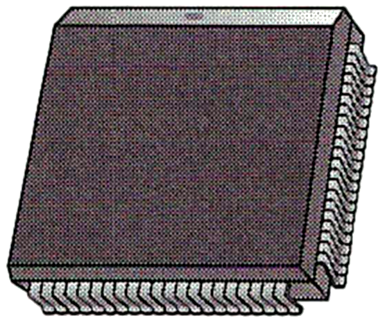
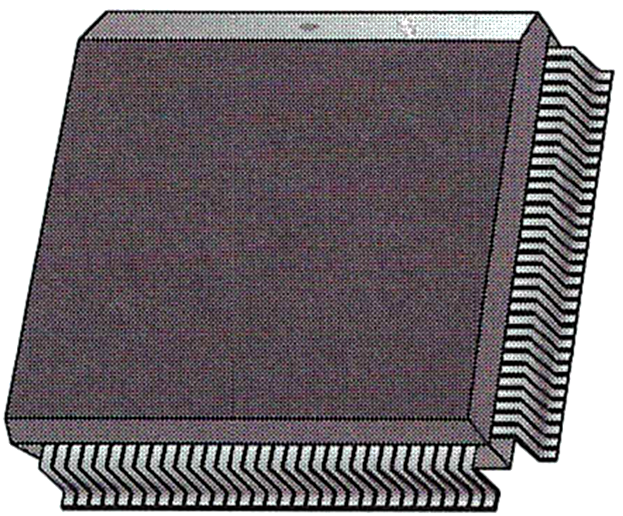

วงจรตรรกะ แบบโปรแกรมได้
🎯 จุดประสงค์ของบทเรียน
- ทำความรู้จักชนิดของอุปกรณ์วงจรตรรกะแบบโปรแกรมได้
- รู้จักวิธีต่าง ๆ ในการโปรแกรมอุปกรณ์ตรรกะ
- รู้จักกับภาษาหลัก ๆ ในการโปรแกรมที่ใช้กับวงจรตรรกะแบบโปรแกรมได้
- รู้จักกับกระบวนการออกแบบวงจรตรรกะแบบโปรแกรมได้
🧭 ความเชื่อมโยงกับ มคอ.3
CLO1 อธิบายหลักการเบื้องต้นของภาษาอธิบายฮาร์ดแวร์ (Hardware description languages) เพื่อใช้ในการสังเคราะห์วงจรรวม
CLO13 อ่านงานที่เกี่ยวข้องกับเทคนิคใหม่ ๆ ที่ใช้ในการวิเคราะห์และออกแบบวงจรตรรกะเชิงเลข
กิจกรรม: บรรยาย · ปฏิบัติการ: ทำความรู้จักโฟลว์การออกแบบ FPGA (ต่อด้วยการเขียนโมดูล Verilog ในบทที่ 12)
การประเมิน: แบบฝึกหัดและรายงานผลการทดลอง (20%) · สรุปบทความเทคนิคใหม่ในการนำเสนอโครงงาน (สัปดาห์ที่ 15) · สอบปลายภาค (30%)
11.1 วงจรตรรกะแบบโปรแกรมได้ (Programmable Logic)
ในปัจจุบันเราสามารถสร้างอุปกรณ์ดิจิทัลฮาร์ดแวร์ขึ้นมาใช้เองได้ โดยไม่ต้องนำชิ้นส่วนหรือเกทเป็นชิ้น ๆ มาประกอบเข้าด้วยกันเพื่อให้มีฟังก์ชันการทำงานเชิงตรรกะเหมือนอย่างที่เราทำกันมาก่อนหน้านี้ เราเรียกวงจรลักษณะนี้ว่าวงจรตรรกะแบบโปรแกรมได้ (programmable logic) ซึ่งมีข้อดีเหนือกว่าการใช้งานวงจรตรรกะแบบระบุฟังก์ชันตายตัว (fixed-function logic) คืออุปกรณ์ในลักษณะที่โปรแกรมฟังก์ชันขึ้นใช้เองได้จะใช้พื้นที่บนบอร์ดลดลง ในขณะที่มีฟังก์ชันให้ใช้งานครบถ้วนตามที่ต้องการ ต่างจากการใช้สิ่งที่สำเร็จรูปซึ่งอาจมีบางองค์ประกอบที่ไม่ได้ใช้และสิ้นเปลืองเนื้อที่บนชิพอย่างเปล่าประโยชน์ ข้อดีที่เพิ่มเติมคือการออกแบบด้วยการใช้ programmable logic สามารถเปลี่ยนแปลงวงจรใหม่ได้โดยไม่ต้องรื้อสายแล้วต่อใหม่ หรือต้องไปหาส่วนประกอบอื่นที่ไม่มีอยู่เดิมมาเปลี่ยนใหม่ นอกจากนี้วงจรที่ออกแบบด้วยการโปรแกรมนี้ยังสามารถนำไปใช้ดำเนินการต่อไปได้อย่างรวดเร็ว และใช้ต้นทุนที่ต่ำกว่าการใช้ไอซีที่เป็นฟังก์ชันตายตัวอย่างมาก
11.2 ชนิดของอุปกรณ์ programmable logic
อุปกรณ์ programmable logic มีหลากหลายชนิดให้เลือกใช้ ตั้งแต่อุปกรณ์ขนาดเล็ก ๆ ที่สามารถนำมาใช้แทนไอซีที่มีฟังก์ชันตายตัวได้ไม่มาก ไปจนถึงอุปกรณ์ที่มีองค์ประกอบซับซ้อน มีความหนาแน่นขององค์ประกอบวงจรสูง และสามารถแทนไอซีที่มีฟังก์ชันตายตัวได้เป็นหลักพันตัว เราสามารถจำแนกอุปกรณ์ออกเป็น 2 ชนิดใหญ่ ๆ ได้แก่ PLD (Programmable Logic Device) และ FPGA (Field Programmable Gate Array) ดังเห็นในรูปที่ 11.1 โดยที่ฝั่งของ PLD ยังแยกออกได้เป็น SPLD (Simple PLD) และ CPLD (Complex PLD) อีกด้วย
11.2.1 Simple Programmable Logic Device (SPLD)
อุปกรณ์ประเภทนี้เป็น PLD แบบดั้งเดิมและยังมีการใช้งานในขนาดเล็ก ๆ โดยทั่วไปแล้ว SPLD หนึ่งตัวจะสามารถใช้แทนไอซีแบบฟังก์ชันตายตัวพร้อมการเชื่อมต่อสายของไอซีเหล่านั้นได้ถึงประมาณ 10 ตัว ทั้งนี้ขึ้นอยู่กับชนิดของฟังก์ชันและประเภทของ SPLD ที่เลือกใช้ โดยส่วนใหญ่แล้ว SPLD จำแนกได้ 2 ชนิดหลัก ๆ ได้แก่ PAL (programmable array logic) ซึ่งโปรแกรมการทำงานได้เพียงครั้งเดียว โดย PAL จะประกอบด้วย programmable array ที่เป็นเกท AND และมี array ของเกท OR ที่โปรแกรมไม่ได้ ดังแสดงไว้ในรูปที่ 11.2 (ก) SPLD อีกแบบเรียกว่า GAL (generic array logic) ซึ่งมีพื้นฐานเหมือนกับ PAL เพียงแต่สามารถโปรแกรมได้หลายครั้ง โดย GAL จะประกอบด้วย reprogrammable array ที่เป็นเกท AND และมี array ของเกท OR ที่โปรแกรมไม่ได้ แต่สามารถโปรแกรมส่วนเอาต์พุตได้ ดังที่แสดงไว้ในรูปที่ 11.2 (ข)
ลักษณะแพ็คเกจของ SPLD โดยทั่วไปจะเหมือนกับที่แสดงในรูปที่ 11.3 ซึ่งมักจะมีจำนวนขาไอซีตั้งแต่ 24 ถึง 28 ขา

11.2.2 Complex Programmable Logic Device (CPLD)
เมื่อปริมาณของวงจรที่สามารถใส่บนชิพได้เพิ่มมากขึ้นจากการพัฒนาทางเทคโนโลยีที่ก้าวหน้า ทำให้ความหนาแน่นขององค์ประกอบ PLD สูงขึ้น ผู้ผลิตจึงสามารถบรรจุ SPLD มากกว่าหนึ่งตัวลงไปในชิพเดียว และเป็นเหตุให้ CPLD ถือกำเนิดขึ้นมา โดยหลักแล้ว CPLD ก็คืออุปกรณ์ที่บรรจุ SPLD เอาไว้หลาย ๆ ตัว ทำให้สามารถทดแทนไอซีที่เป็นฟังก์ชันตายตัวได้เป็นจำนวนมาก รูปที่ 11.4 แสดงให้เห็นแผนผังของ CPLD พื้นฐานที่ประกอบด้วยบล็อคลอจิกอาเรย์ (logic array block: LAB) จำนวน 4 บล็อค พร้อมกับอาเรย์ของสายการเชื่อมต่อแบบโปรแกรมได้ (programmable interconnection array: PIA) จำนวน 1 บล็อค ชิพ CPLD หนึ่ง ๆ อาจประกอบด้วย LAB จำนวนตั้งแต่ 2 ไปจนถึง 64 LABs โดยแต่ละบล็อคลอจิกอาเรย์จะมีขนาดประมาณ 1 SPLD
โดยทั่วไป CPLD จะถูกนำไปใช้ในการสร้างวงจรฟังก์ชันที่เรากล่าวไว้ในหนังสือเล่มนี้ได้หลากหลาย เช่น วงจร decoder, encoder, multiplexer, demultiplexer, adder และอื่น ๆ CPLD มีให้เลือกใช้หลากหลาย configuration ตั้งแต่แพ็คเกจที่มีจำนวนขา 44 ขาไปจนถึง 160 ขา ตัวอย่างของแพ็คเกจของ CPLD แสดงให้เห็นในรูปที่ 11.5


11.2.3 Field Programmable Gate Array (FPGA)
โดยทั่วไปแล้วชิพอุปกรณ์ FPGA ชิ้นหนึ่งจะมีความสลับซับซ้อนและมีความหนาแน่นขององค์ประกอบสูงกว่า CPLD อย่างมาก แม้ว่างานบางอย่างอาจจะนำไปใช้ในลักษณะเดียวกัน แต่ในกรณีของ SPLD กับ CPLD นั้นจะมีความเกี่ยวเนื่องคล้ายคลึงกันมากกว่า ตามที่ได้กล่าวไว้ข้างต้นแล้วว่า CPLD คือการนำเอา SPLD หลาย ๆ ตัวมารวมเข้าด้วยกัน แต่สำหรับ FPGA แล้วมีความแตกต่างในเชิงสถาปัตยกรรมโครงสร้างภายใน รูปที่ 11.6 แสดงให้เห็นถึงลักษณะโครงสร้างที่มีองค์ประกอบพื้นฐาน 3 อย่าง ได้แก่ บล็อคลอจิก (logic block) สายสัญญาณเชื่อมโยงที่โปรแกรมปรับเปลี่ยนได้ (programmable interconnections) และบล็อคอินพุต/เอาต์พุต (I/O block)
บล็อคลอจิกใน FPGA จะไม่สลับซับซ้อนมากเท่ากับบล็อคลอจิกอาเรย์ (LAB) ที่อยู่ใน CPLD แต่จะมีจำนวนบล็อคที่มากกว่า และเนื่องจากบล็อคลอจิกมีความเรียบง่ายเมื่อเปรียบเทียบกัน เราจึงเรียกสถาปัตยกรรม FPGA ว่าเป็นแบบ fine-grained ซึ่งต่างจากสถาปัตยกรรมแบบ coarse-grained ที่แต่ละบล็อคลอจิกมีขนาดต่อหน่วยที่ใหญ่และมีความซับซ้อนกว่า สำหรับบล็อคอินพุต/เอาต์พุตของ FPGA จะถูกจัดเอาไว้บริเวณขอบด้านนอกของโครงสร้างเพื่อประโยชน์ในการเชื่อมโยงกับอุปกรณ์ภายนอก โดยสามารถระบุเลือกได้เป็นรายตัวว่าจะให้ทำหน้าที่เป็นขาอินพุต เอาต์พุต หรือเป็นทั้งอินพุตและเอาต์พุตในขาเดียวกัน ทั้งนี้จะมีเครือข่ายสายสัญญาณเชื่อมโยงระหว่างบล็อคลอจิกและบล็อคอินพุต/เอาต์พุตที่สามารถโปรแกรมปรับเปลี่ยนเพื่อให้ทำงานได้ตามความประสงค์ ชิพอุปกรณ์ FPGA ที่มีขนาดใหญ่จะบรรจุบล็อคลอจิกเอาไว้เป็นหมื่น ๆ บล็อค รวมทั้งหน่วยความจำและทรัพยากรอื่น ๆ สำหรับระบบอีกด้วย
แพ็คเกจของ FPGA ในทางกายภาพมักเป็นแบบ ball-grid array (BGA) ซึ่งสามารถมีจำนวนขาอินพุต/เอาต์พุตได้มากกว่า 1000 ขาเลยทีเดียว
11.3 กระบวนการในการโปรแกรมวงจรตรรกะ
ไม่ว่าจะเป็น SPLD, CPLD หรือ FPGA ก็เปรียบเสมือนกระดานที่ว่างเปล่าที่เราสามารถขีดเขียนเพื่อออกแบบวงจรต่าง ๆ ลงไปได้ตามที่ต้องการ เพื่อให้เป็นระบบตามที่ต้องการด้วยการใช้กระบวนการเฉพาะของแต่ละอุปกรณ์ กระบวนการดังกล่าวต้องการชุดซอฟต์แวร์สำหรับการพัฒนาที่ติดตั้งบนเครื่องคอมพิวเตอร์เพื่อใช้ออกแบบวงจรตรรกะและส่งไปโปรแกรมที่ตัวชิพชนิดนั้น ๆ โดยคอมพิวเตอร์จะต้องเชื่อมต่ออยู่กับบอร์ดพัฒนาอย่างที่เห็นในรูปที่ 11.7
ในการโปรแกรมอุปกรณ์จะมีขั้นตอนจำนวนมาก เราเรียกกระบวนการนี้ว่าโฟลว์การออกแบบ (design flow) แผนภาพในรูปที่ 11.8 แสดงให้เห็นถึงขั้นตอนการปฏิบัติในการโปรแกรมอุปกรณ์ ทั้งนี้โฟลว์การออกแบบจะต้องมีการเข้าถึงไลบรารีที่ใช้ในการออกแบบ (design library) ด้วย
11.3.1 การออกแบบวงจร (Design Entry)
เป็นขั้นตอนเริ่มแรกของการโปรแกรมอุปกรณ์ ซึ่งจะต้องใช้ซอฟต์แวร์ประยุกต์ที่มีทั้งแบบ text-based และแบบ graphic (การกำหนด schematic ของวงจร) หรือการอธิบายถึง state diagram ของระบบ ขั้นตอนนี้จะไม่ขึ้นกับประเภทของอุปกรณ์ เครื่องมือที่เป็นแบบ text-based จะใช้ภาษาที่ใช้อธิบายฮาร์ดแวร์ (Hardware Description Language: HDL) เช่น ภาษา VHDL, Verilog, AHDL หรือ ABEL สำหรับเครื่องมือแบบ graphic จะใช้สำหรับนำเอาฟังก์ชันลอจิกที่มีในไลบรารีมาเรียกใช้ด้วยการลากวางลงบนหน้าจอกราฟิก แล้วทำการต่อเชื่อมฟังก์ชันเหล่านั้นเข้าด้วยกันเพื่อกำหนดการทำงานร่วมกัน ส่วนเครื่องมือกำหนด state diagram จะเป็นตัวเชื่อมโยงการออกแบบเพื่อกำหนดลำดับขั้นตอนการทำงานของวงจรต่าง ๆ และเงื่อนไขของการเปลี่ยนแปลงของแต่ละ state เพื่อให้วงจรต่าง ๆ ทำงานร่วมกันได้อย่างเป็นลำดับขั้นตอนตามที่ต้องการ
เมื่อการออกแบบได้ถูกกำหนดเอาไว้แล้ว จะต้องนำไปผ่านขั้นตอนการคอมไพล์ด้วยคอมไพเลอร์ (compiler) ซึ่งเป็นโปรแกรมที่ควบคุมกระบวนการของโฟลว์การออกแบบทั้งหมด และทำการแปลซอร์สโค้ดที่ได้จากการออกแบบวงจรให้เป็นออปเจคโค้ดในรูปแบบที่สามารถนำไปทดสอบและดาวน์โหลดลงยังอุปกรณ์เป้าหมาย ซอร์สโค้ดจะถูกสร้างในช่วงของการออกแบบวงจรนี้ ส่วนออปเจคโค้ดที่ได้ออกมาจะเป็นโค้ดตัวสุดท้ายที่จะถูกนำไปสร้างวงจรลงบนตัวอุปกรณ์จริง ๆ
11.3.2 การจำลองการทำงานของฟังก์ชัน (Functional Simulation)
โค้ดที่ผ่านการออกแบบและคอมไพล์แล้วจะถูกนำมาจำลองการทำงานเพื่อตรวจสอบว่าวงจรที่ถูกออกแบบนั้นทำงานได้อย่างถูกต้องตามที่คาดหวังเอาไว้หรือไม่ การจำลองการทำงานนี้จะตรวจสอบด้วยการป้อนอินพุตเป็นชุดที่กำหนดไว้ แล้วดูว่าได้เอาต์พุตของฟังก์ชันต่าง ๆ อย่างถูกต้องหรือไม่ ซอฟต์แวร์ที่เราใช้ในการจำลองการทำงานนี้เรียกว่า waveform editor ซึ่งจะช่วยตรวจสอบหาข้อผิดพลาดที่อาจเกิดขึ้นจากการออกแบบและโปรแกรมวงจร เพื่อที่จะได้นำกลับไปแก้ไขอย่างเหมาะสมในขั้นตอนของการออกแบบอีกครั้ง (ดังเส้นป้อนกลับในรูปที่ 11.8)
11.3.3 การสังเคราะห์วงจร (Synthesis)
ในขั้นตอนนี้สิ่งที่ออกแบบมาจะถูกแปลงให้เป็นสิ่งที่เรียกว่า netlist ซึ่งเป็นรูปแบบมาตรฐานและเป็นรูปแบบที่ไม่ขึ้นกับชนิดของอุปกรณ์
11.3.4 การนำไปใช้ (Implementation)
ขั้นตอนนี้เป็นขั้นที่นำเอาโครงสร้างของวงจรตรรกะที่อธิบายด้วย netlist จากขั้นตอนก่อนหน้าไปจัดวางไว้บนโครงสร้างจริงของ programmable device ที่ถูกเลือกใช้ กรรมวิธีในการนำไปใช้นี้อาจเรียกว่าการ fitting หรือการ place and route ผลลัพธ์ที่ได้ในขั้นนี้คือสิ่งที่เรียกว่า bitstream ซึ่งจะอยู่ในรูปแบบที่ขึ้นอยู่กับชนิดของอุปกรณ์
11.3.5 การจำลองจังหวะเวลาการทำงาน (Timing Simulation)
ขั้นตอนนี้เกิดหลังจากที่โครงสร้างได้ถูกนำไปจัดวางไว้บนอุปกรณ์เป้าหมายแล้ว โดยจะมีการทดสอบวงจรว่าทำงานตามจังหวะเวลาที่ออกแบบเอาไว้หรือไม่ มีข้อผิดพลาดที่เกิดจาก propagation delay หรือข้อบกพร่องอื่น ๆ ที่เกี่ยวข้องกับจังหวะเวลาการทำงานหรือไม่
11.3.6 ดาวน์โหลด (Download)
ขั้นตอนนี้เป็นการนำเอา bitstream ที่ถูกสร้างขึ้นมาสำหรับอุปกรณ์เป้าหมายไปดาวน์โหลดลงยังอุปกรณ์จริง ในขั้นตอนนี้อาจต้องใช้เครื่องมือพิเศษที่เรียกว่า device programmer หรืออาจจะใช้ตัวบอร์ดทดลองเพื่อดาวน์โหลดลงไปยังตัวชิพ อุปกรณ์บางประเภทเอื้อให้ดาวน์โหลดโปรแกรมได้ในขณะที่ตัวชิพติดตั้งอยู่บนระบบที่ใช้งานแล้ว เราเรียกว่า in-system programming (ISP) โดยผ่านอินเตอร์เฟสมาตรฐาน JTAG (Joint Test Action Group)
สำหรับอุปกรณ์บางชนิดที่เป็นแบบ volatile ซึ่งไม่สามารถจดจำข้อมูลได้ด้วยตัวเองเมื่อไม่มีการจ่ายไฟหรือเมื่อถูกรีเซต ข้อมูล bitstream จะต้องถูกจัดเก็บไว้ในหน่วยความจำอย่างใดอย่างหนึ่งที่คงข้อมูลไว้ได้ และสามารถโหลดกลับไปที่อุปกรณ์ได้หลังจากไม่มีไฟเลี้ยงหรือถูกรีเซต สำหรับอุปกรณ์ที่เป็นแบบ ISP บางระบบอาจสามารถอัปเกรดได้ในระหว่างที่วงจรกำลังทำงานอยู่ เราเรียกสิ่งนี้ว่าการกำหนดค่าใหม่แบบ “on-the-fly”
ท้ายบท
- VHDL คืออะไร
(a) เป็น logic device ประเภทหนึ่ง(b) เป็นภาษาในการโปรแกรมอุปกรณ์ PLD(c) ภาษาในการโปรแกรม(d) ย่อมาจากคำว่า Very High Density Logic
- CPLD ย่อมาจากคำว่าอะไร
(a) Controlled Program Logic Device(b) Complex Programmable Logic Driver(c) Complex Programmable Logic Device(d) Central Processing Logic Device
- FPGA ย่อมาจากคำว่าอะไร
(a) Field Programmable Gate Array(b) Field Programmable Generic Array(c) Fast Programmable Gate Array(d) Flash Process Gate Application
สรุปท้ายบท
- วงจรตรรกะแบบโปรแกรมได้ใช้พื้นที่บนบอร์ดน้อยกว่า แก้ไขวงจรได้โดยไม่ต้องรื้อสาย และต้นทุนต่ำกว่าไอซีแบบฟังก์ชันตายตัว แบ่งเป็น PLD (SPLD, CPLD) และ FPGA
- SPLD มี 2 ชนิดหลัก คือ PAL (programmable AND array + fixed OR array โปรแกรมได้ครั้งเดียว) และ GAL (reprogrammable AND array และ output logic ที่โปรแกรมได้)
- CPLD คือ SPLD หลายตัวในชิพเดียว ประกอบด้วย LAB 2–64 บล็อคเชื่อมกันผ่าน PIA
- FPGA เป็นแบบ fine-grained ประกอบด้วยบล็อคลอจิกจำนวนมาก สายสัญญาณเชื่อมโยงที่โปรแกรมได้ และบล็อคอินพุต/เอาต์พุตรอบขอบชิพ
- โฟลว์การออกแบบ: design entry (HDL เช่น VHDL, Verilog) → functional simulation → synthesis → implementation → timing simulation → download
แบบทดสอบท้ายบท
เลือกคำตอบ ระบบจะเฉลยพร้อมคำอธิบายทันที (ไม่มีการบันทึกคะแนน ใช้สำหรับทบทวนด้วยตนเอง)
ปฏิบัติการสัปดาห์ที่ 14 (ตอนที่ 1) · ทำความรู้จักโฟลว์การออกแบบ FPGA
ตามแผนการสอนใน มคอ.3 สัปดาห์ที่ 14 สอนบทที่ 11 ร่วมกับบทที่ 12 ปฏิบัติการตอนนี้ใช้เวลาประมาณ 1 ชั่วโมง เพื่อเตรียมเครื่องมือและเดินผ่านโฟลว์การออกแบบหนึ่งรอบ ก่อนเขียนโมดูล Verilog และ testbench ในบทที่ 12
📋 ใบงานปฏิบัติการที่ 11 (สัปดาห์ที่ 14)
- เตรียมเครื่องมือ: ติดตั้งเครื่องมือจำลอง (เช่น Icarus Verilog + GTKWave หรือใช้ EDA Playground บนเว็บ) และซอฟต์แวร์ของผู้ผลิต FPGA ที่ห้องปฏิบัติการใช้ (เช่น Quartus Prime Lite หรือ Vivado) พร้อมบอร์ดทดลอง
- เดินโฟลว์ครบหนึ่งรอบ: ใช้โมดูล majority ในแบบจำลองหัวข้อ 11.3 → functional simulation → synthesis → ดูรายงานจำนวน LUT/logic element ที่ใช้ → กำหนดขา (pin assignment) ให้สวิตช์ 3 ตัวและ LED 1 ดวง → ดาวน์โหลดลงบอร์ดและทดสอบครบ 8 กรณี
- เปรียบเทียบ: นำวงจร full adder ที่เคยต่อด้วยไอซี 74 (บทที่ 7) มาเขียนลงอุปกรณ์เดียวกัน บันทึกทรัพยากรที่ใช้ และเปรียบเทียบจำนวนไอซี/สายไฟเดิมกับวงจรบนชิพ
- สำรวจ: หาข้อมูลอุปกรณ์บนบอร์ดที่ใช้ (ชนิด SPLD/CPLD/FPGA, จำนวน LUT/macrocell, volatile หรือไม่) และระบุว่า bitstream เก็บที่ใดเมื่อปิดไฟ
ส่ง: ภาพหน้าจอผลจำลองและรายงานการสังเคราะห์ · ตารางทดสอบบนบอร์ด · คำตอบข้อ 3–4 (ประเมินในหมวดแบบฝึกหัดและรายงานผลการทดลอง 20%)
📰 เตรียมสรุปบทความเทคนิคใหม่ (CLO13 · นำเสนอสัปดาห์ที่ 15)
แต่ละกลุ่มเลือกอ่านบทความหรือเอกสารทางเทคนิค 1 เรื่องที่เกี่ยวกับเทคนิคใหม่ในการออกแบบวงจรดิจิทัล เช่น FPGA รุ่นใหม่, high-level synthesis, RISC-V บน FPGA, eFPGA หรือเครื่องมือโอเพนซอร์ส (Yosys/nextpnr) แล้วสรุป 1 หน้าและนำเสนอสั้น ๆ ร่วมกับโครงงานในสัปดาห์ที่ 15